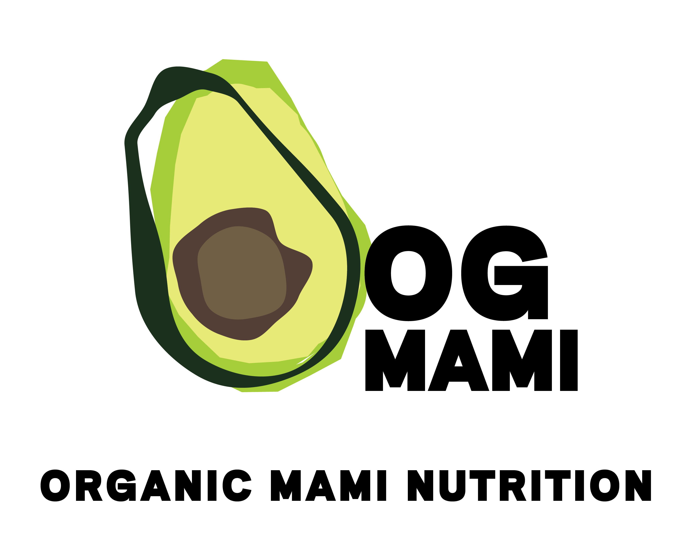
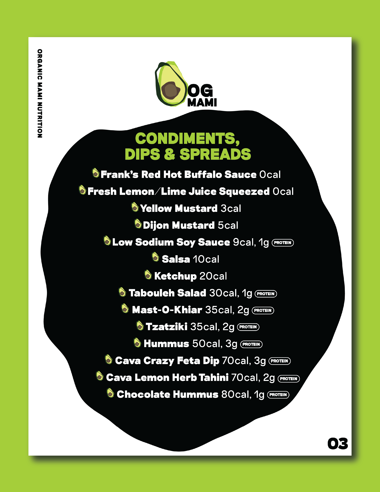
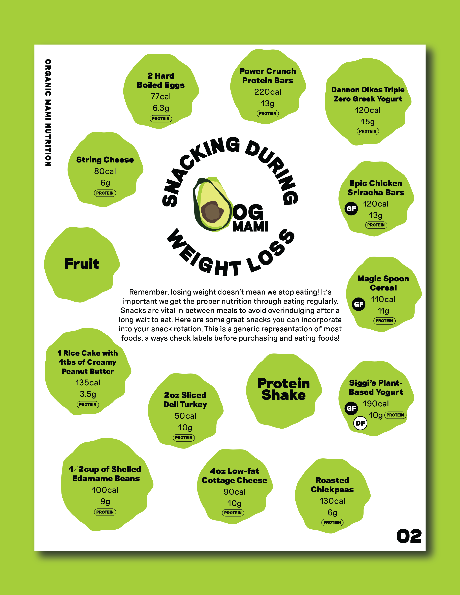

01 OG Mami Logo Design + Brand Identity
Freelance OG Mami Nutrition, 2020
My client Vianca, is a health coach + nutritionist, who helps people get healthy via weight loss, muscle gains or overall wellness. This business endeavor is quite fresh, she asked me to design her logo and overall brand identity for her company called Organic Mami Nutrition. Her criteria was that she wants the brand to exude weirdness and quirkiness with a flare of professional intent. Off the bat, she was afraid the company name was a bit too lengthy to include in the logo. I suggested we shorten ‘Organic’ to ‘OG’ for the sake of composition, which rolled off the tongue nicely. She approved my idea, and I got to designing.
Vianca wanted the logo to be an avocado. She sent me a drawing of this avocado she was obsessed with. It was drawn very scribbly, which is why she enjoyed it so much. With that in mind I started to put together a moodboard. My mind instantly knew Pop Art would be a source of inspiration. When designing for new clients, I like to have a range of options, from playing it safe to doing the most. It gives the client an idea of how far I can take an idea (if need be) and to visually grasp which aesthetic embodies their brand successfully. I had an array of avocado iterations that could be paired with three different colorful polka dot backdrops. When I presented the design mockups to the client, she told me how glad she was that I understood her creative vision. After reviewing the logo designs, she decides that she wants her brand to lean towards a minimalist aesthetic. Vianca decided to go with just an avocado, without any backdrop.
In the presentation I sent her of the mockups, I added some examples of the avocado logo paired with the company name in various compositions. Vianca said she liked how the company name slightly overlapped on top of the avocado off to the side, so I utilized that composition for the final logo design. The last thing on the todo list was to narrow down the five chosen typefaces. The serif font was immediately disqualified, it would be too clashing with the avocado. We needed a sans-serif that showed subtle personality, but not too boring. For the chosen typeface, we went with Riposte, a neo-grotesque typeface inspired by midcentury fonts, mixed with contemporary features from the Good Type Foundry, based in Oslo, Norway in the weight Heavy.

